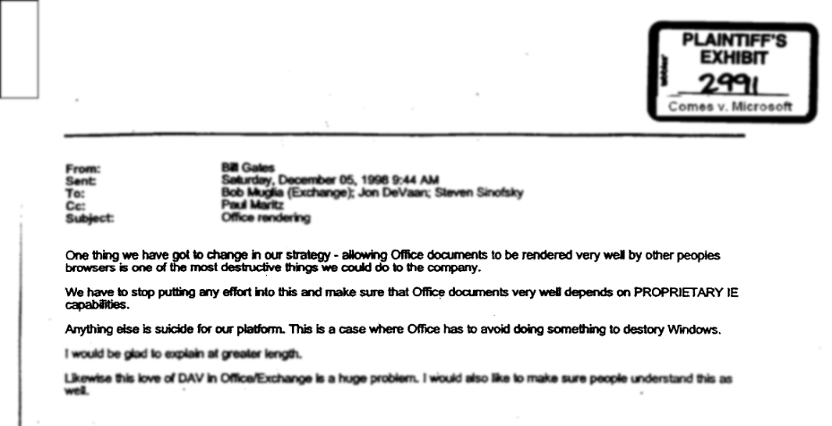

How many of you have a drawer like this at home?
How many of you remember making phone purchasing decisions not based on which phone offered you the best value, but which phone best worked with your existing constellation of vastly overpriced chargers and accessories? Can you remember paying $50-$100 for specific chargers and adapters for your phone? Or not being able ot charge them on holiday because you brought the wrong adapter by mistake? Running out of power points due to the plethora of different "wallwarts" you needed to service your array of devices which each had their own proprietary (or needlessly different) system?
How many of you have noticed that this isn't so much of a problem any more? (ok, everybody but the Apple users)... Did you ever wonder why this suddenly became ubiquitous a couple years ago? This is a micro USB connector.
Consider the price difference and flexibility.
I can get one of these cables that will charge my newer phone from my computer for NZ$1.36 delivered to my door [media/micro_usb_cable_advert.png]. The design of this plug is an open standard . Anyone can build cables and sockets that use this design without paying royalties or fearing patent infringement lawsuits. They don't even need permission.
Open Standards
What are they?
Well defined technical specs available at no cost online, created via a transparent process , by multiple parties , with no royalties , no discrimination , and extensible via a well-defined process.
Standards compliance can typically be vetted by an independent third party (which might carry a cost).
Depending on who you ask, you'll get different definitions of open standards. I personally believe there are things that we can do as a society that improve the wellbeing and quality of life for everyone equally - for the "greater good". Things like building and maintaining public roads. Fire and ambulance service. I won't mention EQC to people in Chch (hah!). The public education and health systems. A "greater good" few people are conscious of is the open standards that surround us. All of these things have a cost to society in the form of taxes, but they actually create entirely new efficiences, markets, and opportunities and incentives for businesses to innovate.
Double standards
Or a plethora.
Let's consider the metric system [double standard] - as a brief digression, has anyone ever considered the vast waste of resources caused by the US' (and to a lesser extent the UK's) obstinate refusal to let go of the American Standard system of measurement (simliar to Imperial units, but not quite the same)? Think about how many of you have both metric and imperial spanners, socket sets, allen keys, and any number of other tools. Look at the fastern section at your local hardware store sometime. The waste through near duplication is staggering, and it's global. There's no functional justification for maintaining a separate system - it's just inertia and provincial hubris. My homeland is the source of more than a few facepalms.
We've got problems with competing standards - look at the hassles of different plug designs and the competition between 220V AC @ 50Hz and 110V AC @ 60Hz. Thankfully open standard AC/DC converters that can handle that range for most of our electronic devices these days.
Permissionless
Because you never know from whence innovation will emerge.
Open standards offer us something called "permissionless innovation ". If you want to, you can manufacture a micro-USB powered device and sell it, without asking anyone's permission, as long as you comply with the standard. That's easy for independent organisations to measure. You can build your innovative new gadget around a micro-USB charging system without worrying that someone will sue you for patent infringement for doing so, or charge you royalties for using their standard, deny you the right to use the micro-USB standard if it suits their strategic interests to do so, or that the standard will change out from under you without a well controlled process that brings you along for the ride.
Open Standards are an incoming tide
I think these examples provide ample and undeniable evidence of the benefits and value agreed open standards bring to entire societies. They're like the "rising tide which lifts all boats". They're essentially the giant shoulders on which new generations of innovators can stand.

Open Standards: kryptonite for proprietary software
Sadly, however, if you want to compete with most of the major software products our government, and most businesses, schools, organisation, etc. use, the same is not true.
Remember my point about the different electrical system AC voltages and frequencies and plug designs in use in the world, and how much waste and inefficiency a few different standards causes? Well at least those are all open standards that have been adopted, for the most part, on a national level. Imagine if there were no standards... if every power generator picked whatever voltage and frequency and plug design suited them on the day? Imagine how hard it would be to build anything sort of product to work with such an unstable marketplace.
Proprietary software is alergic to standards.
That's precisely the situation with the most commonly used software. Imagine that the digital artefacts produced by software we use today - particularly file formats, but also APIs, protocols - are arbitrary proprietary standards. Software suppliers will bang on about how open standards inpinge on their ability to "innovate" but make no mistake: they desperatedly want to dictate the format, and they want to use it to hobble would-be competitors, leverage the network effect and create a monopoly they can lock-in and exploit for as long as possible.
Compatibility is vital for competition
Thank "the network effect "
In most cases, if you want to compete with market leaders in various end-user software domains - all multinational corporations like Microsoft, Adobe, Apple, Oracle, SAP, ESRI, and others, then you either have to somehow offer a product that is compatible with their proprietary format standards. If you are another huge corporation, you might be able to buy permission to do that, maybe... or invest huge amounts of energy trying to reverse engineer their proprietary standards. And if, against all odds, you succeed, all they need to do is issue an update that subtly changes that proprietary standard, completely breaking your compatibility.
Proprietary standards permeate
They soak through social fabric, from government to business, to citizen, and back again.
The government requires us to communicate with it in order to do business with it. And they use these proprietary formats [GETS images] - by requiring us to use these templates, for example, the government implicitly mandatings that private industry use Microsoft Office . That's anti-competitive.
Mechanism of Lock-in
That's what proprietary standards do.
Ultimately, proprietary standards are a mechanism for achieving "lock-in". Consider this email , used in evidence in a class action suit against Microsoft back in 2006 [BGatesEmailReProprietaryStds.png] Companies like Microsoft knew their monopoly profits absolutely depended on maintaining proprietary control of formats in 1996, and no doubt well before that. And of course, the goal of every corporation is to achieve a market monopoly it can exploit to maximise its profits. Corporate suppliers of proprietary software will never voluntarily adopt open standards. They'll only do it under extreme circumstances... the same sort that caused all the phone manufacturers to adopt micro-USB: government regulation.
Users are powerless
If you succumb, you give away your power as a purchaser.
The biggest problem we face at the moment is that our government doesn't realise it's over a barrel. We have our ministers crowing about how they've achieved another all-of-government licensing agreement with the Microsoft Corporation ... that'll save them heaps. Compared to what? Compared to what Microsoft originally told them they'd pay. Not against a competing offering. Because there is no competing offering that is compatible with MS Office's proprietary formats. So what choice to do they have. Regardless of the "deal" they got and the utterly fictitious savings, make no mistake - we, the taxpayer are paying extortionate monopoly rents to help the government preserve the monoculture they bought into and foolishly renew every few years.
All of Government Agreements
Another three years of Microsoft hegemony. Yay.
Government trumpeted "discounts" and "savings".
What. Utter. Bollocks.
The government is negotiating from a position of zero leverage because they are failing to exercise their sovereign right to regulate a fundamentally broken market. In mature business domain, there are open standards and regulation. Not in the software industry.
Proprietary Standards Everywhere
That's the promise of the TPPA, TTIP and TiSA. The multinational corporate tail wagging the dog.
With their unprecedented political influence in the US, software corporations have shape the policy landscape to suit their ends. The Trans-Pacific Partnership Agreement and the Trade in Services Agreement are two ways they are using the US government to try to propagate those policy frameworks across the world - the TTIP is the equivalent agreement trying to deal with the Atlantic. All are top secret.
Government's Implicit Mandate
Use proprietary standards!
I checked 3 software-related RFPs...
Guardians of NZ Superannuation EDRMS RFP
NZQA HR and Payroll System RFP
Wellington City Council RFID System RFP
NZ's software status quo is proprietary...
and that's woefully broken.
When the market doesn't deliver...
It's the government's job to regulate
We, the NZ software industry, needs to tell our government to do one of its fundamental duties: to impose regulation for the greater good when the market can't or won't regulate itself.
A level playing field
Open Standards Mandate for the greater good.
We don't want to mandate open source software. That would be counter productive. All we want is a level playing field for software, based on mandated compliance with open standards, as you would expect in just about every other marketplace. Open source software will succeed on its own merits, just as it has on the web - which is perhaps the aspect of the digital world most dominated by open standards, but it's already dominated the mobile world, the cloud, the supercomputer, and in the emerging Internet of Things. [level playing field]
Unexpectedly, the UK is way ahead of us
Tell the government that this is one they can fix.
The NZOSS has started a campaign to end the period of government supported monopolistic exploitation we're currently in. We want the NZ government to show some backbone and stop digging itself a deeper hole.
Credits
The images used in this presentation are Creative Commons licensed and, if not mine, are attributed to their owners.
This presentation uses open source browser-based presentation software, Reveal.js , created by Hakim el Hattab .
This talk: http://pres.lane.net.nz/open-standards-nz .
For my speaker's notes, type "s" in a modern open standards compliant browser.